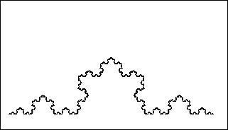

| Take as initiator the line segment of
length 1, and as generator the shape on the right. |
|
 |
| Click the picture to repeat. |
| This gives a sequence of shapes converging to the Koch curve,
not named after a mayor of New York. |
| (This is still true, but no longer as funny as it was once.) |
|
|
| Though its construction is so simple, the Koch curve has some properties that
appear counterintuitive. |
| For example, we shall see that it is
infinitely long, and
that every piece of it, no matter how small it appears, also is infinitely long. |
|  |
| Click the picture to see four copies, indicated by colors. |
|
| Using the shape of the generator as a guide, we see the Koch
curve is made of four copies of itself, each scaled by a factor of 1/3 horizontally
and vertically. |
| Challenge The Koch curve is made
of two copies of itself. Do you see them? What is the scaling factor? |